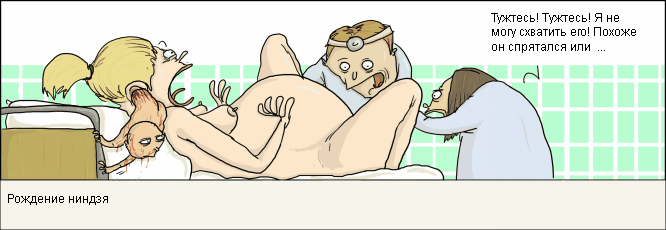

«Голеностоп» с Наташей Кличко
Второй по важности трофей Кубка Колотиловки — Трофей Громилы — до недавних пор не пользовался большим уважением. Обладатель трофея, как правило, имел весьма невысокое место в рейтингах кубка. А значит тренерский штаб, грубо говоря, гавно.
Но к счастью, в последние годы эти еретические бредни уходят в прошлое. Ведь не надо особо большого ума, чтобы поставить игрока с нападением «зашибись» в атаку, после чего выиграть лигу с ботами. А вот вы попробуйте, на одной лишь интуиции, в 17 летнем имбециле из Уругвая увидеть будущего Джека-потрошителя. Который выходя на поле будет валить двух защитников, симулировать пенальти в свою пользу, и под конец матча уходить с прямой красной карточкой. Только исключительные тренерские способности помогут вам создать по настоящему бойцовую команду.
Против кубка громилы пытаются возразить также и термином «чистый спорт без грубости и хамства». Да в хуй такой чистый спорт, когда первый тайм (цитирую): «Было очевидно, что команда ххх пытается атаковать по флангам. После первого тайма счет 0 - 0. Игровое преимущество имела команда ххх.» Вот скажите, сколько прибыли приносит заполненный двадцатитысячник? А сколько при этом стоит купить «отличного» полузащитника? Ну и где доход команды?
Зрелищности! Зрителям и болельщикам не хватает зрелищности в футболе. И если за 90 минут представления покрыть зелёный газон красной кровью, то и зрители будут нести команде миллионы.
Рыба - Бобры (2-7)
Вот уж поистине матч — украшение турнирного старта. Избрав любимейшую тактику канадских тафгаев — прессинг — бобры сломали двух противников и получили карточку. Рыбные же в этом матче разочаровали. Потому как команде, приятно показавшей себя в прошлом сезоне, не дело обходиться двумя жёлтыми карточками и недоломанным нападающим соперника. Тем более, когда противник ясно показывает о своих намерениях.
В первом тайме жёлтая карточка и травма. Попробуем разобраться в происшедшем:
На 13 минуте 20 летний перуанец Пенафель (Imanta Beavers) получает жёлтую карточку за удар соперника по ногам сзади. И буквально через пару минут с поля на носилках уносят молодого Фортиньша (FC Zivju Fileja), игравшего на том же самом фланге. Что же получается: Пенафель с самого начала игры нещадно колотил латышёнка и в конце концов добился своего.
Даже не смотря на выход Деспота(!), хозяева проглотили этот явный наезд и сконцентрировались на игре. Больше ничего интересного в первом тайме не произошло.
И если в начале игры разминались юнцы, то второй тайм взяли на себя настоящие мужики. 30 летний Бобёр обвёл 27 летнего защитника хозяев Камалетдинова и открыл счёт в матче. Камалетдинов, недаром он Макар, тут же ебанул соперника по ногам. Жёлтая карточка, была призвана угомонить игроков и остановить беспредел. Но хрен там было, через десять минут на газон падает ещё один защитник хозяев 24 летний датчанин Розе.
В протоколе матча сказано: «Jannick Rose покинул поле вывихнув локоть при неудачном падении». Вы когда нибудь пробовали неудачно упасть, чтобы вывихнуть локоть? Давайте посмотрим на поле — Розе играет на том же фланге где и сломанный ранее Фортиньш. Браво Пенафель! Это наверняка его рук дело, по другому и быть не может. И я уверена, что этот молодой перуанец себя ещё покажет в будущем.
Тем временем разбушевавшийся Камалетдинов действует намного менее аккуратнее Пенафеля. И получает вторую карточку буквально низачто. Его коллеги, под занавес матча попытались было забить Бобра. Но рыбные уже далеко не те, что были раньше.
Моча - Кексы (2-0)
Всю игру в этом матче сделал 27 летний амбал хозяев Млынчак. На районе — Млыня.
Изнывая от палящего январского солнца Млыня с самого начала игры решил показать кто на поле хозяин. В итоге карточка за симуляцию, но это была такая симуляция, что сразу после неё: «В действиях игроков команды Kixa появилась неуверенность и суматоха, и организованность команды снизилась до уровня "слабо"». Млыня это вам не хухры мухры!
Подавив соперника морально, а чуть позже и в счёте, Млыня заскучал. Судья (купленный Киксой, как сознались позже представители последних) решил не рисковать и отправил амбала в раздевалку «за раговоры» уже в первом тайме. А жаль.
Дабойз - Кокашки (1-0), Шкурка - Бендер (0-0)
Самая миролюбивая команда Кубка Колотиловки (старуха Шопокляк) и на этот раз, ни сама не поцарапала, ни кокашкам не дала. Не стоит даже упоминания жёлтая карточка 21 летнего итальянца Гианназзы, которую он получил за какую-то хуйню.
А вот один из лидеров прошлого сезона — Аматорные — со сменой названия, сменили по всей видимости и политику партии. В итоге команда провела скучнейший матч против Бендера.
Итоги
Безусловно, без Бобров первый игровой день можно было бы выкидывать на свалку. Но турнир только-только начался, ещё не вступил в игру смрадный обладатель прошлого кубка, ещё не разогрелись игроки, и ещё не выпало дождичка, под которым мощные амбалы команд покажут себя во всей красе.
До встречи у бровки. Целую,
ваша Наташа Кличко

© World Press
За настоящими талантами опытные тренера наблюдают чуть-ли не с пелёнок.